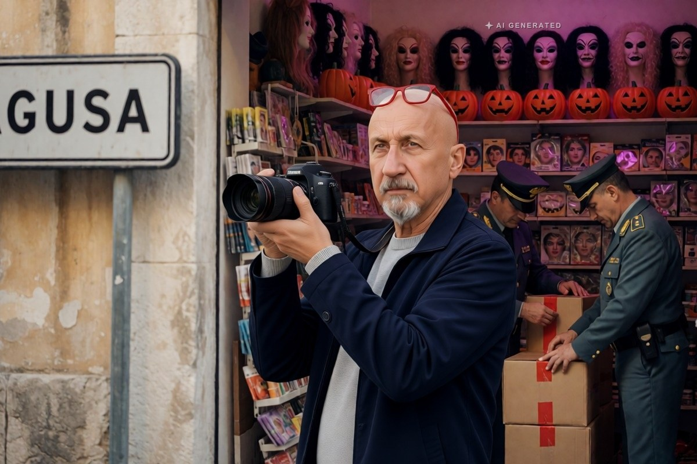

Cronaca · 31 ottobre 2026
Halloween, sequestrati 17 mila articoli non sicuri a Ragusa e Vittoria

Maschere, costumi, parrucche, trucchi e giocattoli senza marchio di conformità, istruzioni in italiano o indicazione dei materiali. Tre negozi controllati, tre titolari segnalati alla Camera di commercio.
di Franco Zanghì
Nei giorni scorsi i finanzieri del Gruppo di Ragusa e della Compagnia di Vittoria hanno controllato 3 negozi tra Ragusa e Vittoria. Sugli scaffali, già pronti per la vendita, hanno trovato oltre 17 mila articoli di Halloween: maschere, costumi, parrucche, zucche decorative, trucchi, giocattoli e bigiotteria. Secondo la Guardia di finanza nessuno di quegli articoli aveva i requisiti minimi che il Codice del consumo chiede a tutela di chi compra.
Che cosa mancava
Il marchio di conformità europeo, oppure le istruzioni in italiano, oppure l'indicazione dei materiali con cui gli articoli sono fatti. Sembrano dettagli da etichetta e non lo sono: senza quelle informazioni non si sa se dentro un trucco o una maschera ci siano sostanze tossiche o allergeni. E chi li indossa, nella notte di Halloween, sono soprattutto i bambini.
Il Codice del consumo è la legge che raccoglie le regole a tutela di chi compra, e una di quelle regole è semplice: un prodotto messo in vendita deve dire da che materiali è fatto, come si usa e sotto quale norma è stato realizzato. Quelle indicazioni non servono al negoziante, servono a chi deve poter risalire alla responsabilità se qualcosa va storto. Quando mancano, il prodotto non è automaticamente pericoloso: è un prodotto di cui nessuno può dire se sia sicuro, e per la legge è la stessa cosa.
Il periodo in cui scattano questi controlli non è casuale. Attorno al 31 ottobre arriva sul mercato una quantità enorme di articoli stagionali a prezzo basso, che restano sugli scaffali per poche settimane e poi spariscono: è la finestra in cui è più facile che entri merce priva dei requisiti, e quella in cui i consumatori guardano l'etichetta meno che mai.
La merce è stata sequestrata. I 3 titolari sono stati segnalati alla Camera di commercio, che deciderà le sanzioni: fino a 25.823 euro ciascuno. Quando il sequestro diventerà confisca, la merce sarà distrutta.
Il sequestro, in questa fase, è un provvedimento amministrativo: la merce viene tolta dalla vendita e messa a disposizione dell'autorità che deve decidere. La sanzione la stabilisce la Camera di commercio, e solo quando il sequestro diventa confisca la merce viene distrutta. È un passaggio che richiede tempo, e nel frattempo gli articoli non possono tornare sugli scaffali.
Una regola semplice per chi compra
Girare la confezione e cercare tre cose: il marchio di conformità, le istruzioni in italiano, l'elenco dei materiali. Se non ci sono, lasciare la confezione sullo scaffale. Una maschera costa pochi euro; la pelle di un bambino non si ricompra.
Fonti
- LiveSicilia, «Halloween, sequestrati 17mila articoli non sicuri a Ragusa e Vittoria», 30 ottobre 2026
- Giornale di Sicilia, «Zucche, parrucche e costumi di Halloween non sicuri, sequestrati 17 mila articoli a Ragusa e Vittoria», 30 ottobre 2026
- Quotidiano di Ragusa, «Halloween, a Ragusa e Vittoria sequestrati oltre 17mila articoli», 30 ottobre 2026
- Libertà Sicilia, «Ragusa. Halloween, sequestrati oltre 17 mila articoli non sicuri», 30 ottobre 2026
- Fonte originaria: comunicato del Comando provinciale della Guardia di finanza di Ragusa
Il valore della merce e la ripartizione per città non sono stati resi noti. I negozi non sono nominati dalle fonti.